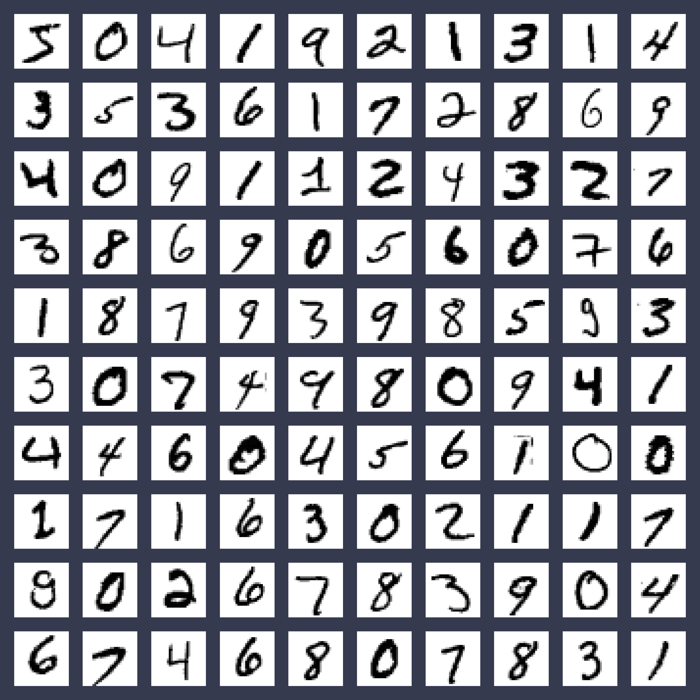

Code for Machine Learning and Data Science II Classification
Table of Contents
These are the code snippets used in Classification
part of Machine Learning and Data Science II.
Introduction
Preamble
# import for custom color cycling from cycler import cycler # define custom default colors for generating image with # consisten color cycling new_colors = ['#326199', '#4fb1a1', '#fcc055', '#eb8d50', '#df6e5b', '#9a031e', '#984ea3'] # define a function to store matplotlib style information def plot_settings(style, size=None): # define the styles for generating web compatible images. if style == "web": style = { 'axes.edgecolor': '1e1e2e', 'axes.facecolor': '363a4f', 'axes.axisbelow' : True, 'axes.labelcolor' : 'cad3f5', 'axes.grid': True, 'axes.grid.which': 'both', 'axes.spines.left': False, 'axes.spines.right': False, 'axes.spines.top': False, 'axes.spines.bottom': False, 'axes.prop_cycle': cycler(color=new_colors), 'grid.color': '5b6078', 'grid.linewidth': '1.2', 'xtick.color': 'cad3f5', 'xtick.major.bottom': True, 'xtick.labelsize': 10, 'xtick.minor.bottom': True, 'xtick.minor.bottom': True, 'xtick.minor.visible': True, 'xtick.minor.width': 0.5, 'ytick.color': 'cad3f5', 'ytick.major.left': True, 'ytick.minor.left': False, 'ytick.minor.visible': True, 'ytick.labelsize': 10, 'savefig.facecolor': '363a4f', 'text.color': 'cad3f5', 'lines.linewidth': 4, 'font.size': 16, 'legend.fancybox' : False, 'legend.facecolor' : '6c7086', 'figure.facecolor': '838ba7', } # Define the font dictionary to store label formatting font = {'color': '#cad3f5', 'weight': 'normal', 'size': 16, } elif style == "slide": style = { 'axes.edgecolor': 'f0f0f0', 'axes.facecolor': 'fafafa', 'axes.axisbelow' : True, 'axes.labelcolor' : '1e1e1e', 'axes.grid': True, 'axes.grid.which': 'both', 'axes.spines.left': False, 'axes.spines.right': False, 'axes.spines.top': False, 'axes.spines.bottom': False, 'axes.prop_cycle': cycler(color=new_colors), 'grid.color': 'f0f0f0', 'grid.linewidth': '1.2', 'xtick.color': '1e1e1e', 'xtick.major.bottom': True, 'xtick.labelsize': 10, 'xtick.minor.bottom': True, 'xtick.minor.bottom': True, 'xtick.minor.visible': True, 'xtick.minor.width': 0.5, 'ytick.color': '1e1e1e', 'ytick.major.left': True, 'ytick.minor.left': False, 'ytick.labelsize': 10, 'savefig.facecolor': 'fafafa', 'text.color': '1e1e1e', 'lines.linewidth': 4, 'font.size': 16, 'legend.fancybox' : False, 'legend.facecolor' : '6c7086', 'figure.facecolor': 'fafafa', } # Define the font dictionary to store label formatting font = {'color': '#1e1e1e', 'weight': 'normal', 'size': 16, } # Apply style sheet for use in matplotlib plt.rcParams.update(style) # Define figure size based on the number of figures if size == 1: plt.figure(figsize = (10, 6)) elif size == 2: plt.figure(figsize = (12, 5)) elif size == 3: plt.figure(figsize = (12, 8)) elif size == None: return 0 def grid_settings(style): if style == "web": plt.grid(which='minor', color='#5b6078', linestyle=':', linewidth=0.5) plt.grid(which='major', color='#5b6078', linestyle=':', linewidth=0.8) elif style == "slide": plt.grid(which='minor', color='#c8c8c8', linestyle=':', linewidth=0.5) plt.grid(which='major', color='#c8c8c8', linestyle=':', linewidth=0.8) plt.minorticks_on()
from pathlib import Path # Define paths to store images IMAGES_PATH = Path() / "images" / "Classification" # Check if path exists IMAGES_PATH.mkdir(parents=True, exist_ok=True) def store_fig(fig_id, tight_layout=True, fig_extension="png", resolution=300, style=None, close=None): if tight_layout: plt.tight_layout() if style == "web": plt.grid(which='minor', color='#5b6078', linestyle=':', linewidth=0.5) plt.grid(which='major', color='#5b6078', linestyle=':', linewidth=0.8) fig_extension = "png" elif style == 'slide': grid_settings(style = "slide") fig_extension = "pdf" path = IMAGES_PATH / f"{fig_id}.{fig_extension}" plt.savefig(path, format=fig_extension, dpi=resolution) if close: plt.close()
MNIST
Download Initial Data
from sklearn.datasets import fetch_openml mnist = fetch_openml('mnist_784', as_frame=False)
For more info on the sklearn.datasets.fetch_openml click here. However for our application two parameters are used.
| PARAMETER | DESCRIPTION |
|---|---|
| name | String identifier of the dataset. Note that OpenML can have multiple datasets with the same name. |
| as_frame | If True, the data is a pandas DataFrame including columns with appropriate dtypes, if false e data and target will be NumPy arrays and the data will only contain numerical values |
print(mnist.keys())
dict_keys(['data', 'target', 'frame', 'categories', 'feature_names', 'target_names', 'DESCR', 'details', 'url'])
X, y = mnist.data, mnist.target print(X)
None
print(X.shape)
0.95035 0.96035 0.9604
X[0]
import matplotlib.pyplot as plt def plot_digit(image_data): image = image_data.reshape(28, 28) plt.imshow(image, cmap="binary") plt.axis("off") some_digit = X[0] plot_digit(some_digit) store_fig("some-digits-plot", close = True)
plt.figure(figsize=(9, 9)) for idx, image_data in enumerate(X[:100]): plt.subplot(10, 10, idx + 1) plot_digit(image_data) plt.subplots_adjust(wspace=0, hspace=0) store_fig("more-digits-plot", close = True)

X_train, X_test, y_train, y_test = X[:60000], X[60000:], y[:60000], y[60000:]
Training a Binary Classifier
y_train_5 = (y_train == '5') # True for all 5s, False for all other digits y_test_5 = (y_test == '5')
from sklearn.linear_model import SGDClassifier sgd_clf = SGDClassifier(random_state=42) sgd_clf.fit(X_train, y_train_5)
sgd_clf.predict([some_digit])
Performance Measures
Measuring Accuracy Using Cross-Validation
from sklearn.model_selection import cross_val_score cross_val_score(sgd_clf, X = X_train,y = y_train_5, cv=3, scoring="accuracy")
| PARAMETER | DESCRIPTION |
|---|---|
| estimator | The object to use to fit the data. |
| X | The data to fit. Can be for example a list, or an array. |
| y | The target variable to try to predict in the case of supervised learning. |
| cv | Determines the cross-validation splitting strategy. |
| scoring | A str (see model evaluation documentation) or a scorer callable object / function with signature scorer(estimator, X, y) which should return only a single value. |
from sklearn.model_selection import StratifiedKFold from sklearn.base import clone skfolds = StratifiedKFold(n_splits=3) # add shuffle=True if the dataset is not # already shuffled for train_index, test_index in skfolds.split(X_train, y_train_5): clone_clf = clone(sgd_clf) X_train_folds = X_train[train_index] y_train_folds = y_train_5[train_index] X_test_fold = X_train[test_index] y_test_fold = y_train_5[test_index] clone_clf.fit(X_train_folds, y_train_folds) y_pred = clone_clf.predict(X_test_fold) n_correct = sum(y_pred == y_test_fold) print(n_correct / len(y_pred))
from sklearn.dummy import DummyClassifier dummy_clf = DummyClassifier() dummy_clf.fit(X_train, y_train_5) print(any(dummy_clf.predict(X_train)))
cross_val_score(dummy_clf, X_train, y_train_5, cv=3, scoring="accuracy")
Confusion Matrix
from sklearn.model_selection import cross_val_predict y_train_pred = cross_val_predict(sgd_clf, X_train, y_train_5, cv=3)
from sklearn.metrics import confusion_matrix cm = confusion_matrix(y_train_5, y_train_pred) cm
y_train_perfect_predictions = y_train_5 # pretend we reached perfection confusion_matrix(y_train_5, y_train_perfect_predictions)
Presicion and Recall
from sklearn.metrics import precision_score, recall_score precision_score(y_train_5, y_train_pred) # == 3530 / (687 + 3530)